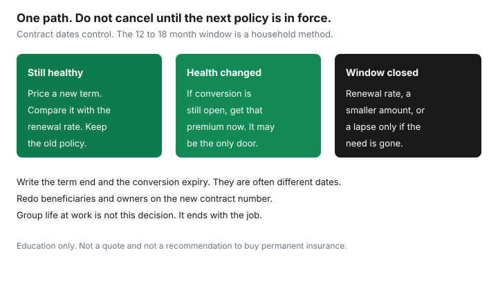

Insurance · Canada
Renew, Convert, or Replace Term Life in Canada Before Expiry: A Decision Tree
A term policy does not announce itself in the year it becomes expensive. The contract either renews at an attained-age rate you can no longer underwrite your way out of, or it offers a conversion to permanent insurance that expires on a date you did not diarize, or it ends. Households in their forties, fifties, and early sixties are the ones who meet that date with a mortgage still on the house and a health history that is no longer a blank form. This page is a decision tree for the 12 to 18 months before the term ends: renew, convert, or replace, and the beneficiary check that keeps a claim payable. It is education. It is not a recommendation to buy permanent insurance.
Disclosure: This page is education. Term life quote portals are an offer type. Saving Optimizer may earn a commission if partner links are added later. We do not currently claim an insurer partnership, and we do not rank companies. We do not sell policies. Renewal prices below are shapes, not a rate. Contract dates control. Pages were read on 24 Sep 2026.
Key takeaways
- Put the term end date and the conversion expiry date on a calendar 12 to 18 months out. They are often different dates.
- Guaranteed renewal means you can keep coverage without a new medical. The price is the attained-age rate in the contract, which is the shock. A new policy is re-underwritten and can be declined.
- Conversion is the contractual right to move to a permanent policy without new medical evidence, and only while the conversion window is open. Health changes are why people use it.
- Laddering two or three terms lets coverage step down as the mortgage and the years of dependency shrink. One large policy to age 80 is not the only shape.
- If you are still healthy, price a new term against conversion and against the renewal rate. If you are not, conversion may be the only door still open.
- Any change is a moment to fix beneficiaries and owners. An ex-spouse, a missing contingent beneficiary, or an irrevocable beneficiary who must consent will not fix themselves at claim time.
Calendar the renewal window 12–18 months before term end
Find two dates on the contract, not one. The term expiry is when this term period ends. The conversion expiry is the last day you may convert to a permanent policy without new evidence of insurability. On many contracts the conversion right ends years before the term itself, or ends at a birthday such as 65 or 71. Those ages are examples of how contracts are written. Yours is the date printed in your contract. Write both dates at the top of the page.
Twelve to 18 months before the earlier of those dates is the working window for a household, not a statute. You need time to gather medical records if you will apply elsewhere, time for an insurer to underwrite, and time to pay the old policy until the new one is in force. Starting six weeks out is how people accept the renewal draft because the alternative is a lapse. Put the date beside the annual insurance review so it is not a separate system you forget.
Also copy the renewal premium if the contract already prints the scale, or ask the insurer for the attained-age renewal premium in writing. You cannot choose among renew, convert, and replace until you know the renewal number. “It will be higher” is not a number.
Guaranteed renewability vs re-underwriting: price shock scenarios
Guaranteed renewable, where the contract has it, means the insurer will continue the coverage without asking you to prove you are still healthy, for the period the contract allows, at rates set out for your age. The trade is the price. A 20-year term bought at 40 was priced for a 40-year-old. The renewal at 60 is priced for a 60-year-old, often for a shorter guaranteed period, and it is not shopped against a healthy applicant’s new 10-year term. People describe the renewal as a multiple of the old premium. Treat any multiple you hear as gossip until the insurer’s letter states your premium.
| Path | Health evidence | What the household feels |
|---|---|---|
| Accept guaranteed renewal | None, if the contract guarantees it. | Coverage continues. The premium is the attained-age rate. Budget it or reduce the amount if the contract allows a decrease. |
| Apply for a new term | Full underwriting. Medications, build, and history are on the table. | If you are offered a standard rate, it is often far below the renewal. If you are declined or rated, the offer may be worse than renewal, or absent. |
| Let it lapse | None. | The death benefit ends. Dependants and a co-signed mortgage do not end with it. Lapse is a decision, not a default you discover in a bank draft that bounced. |
Do not cancel the old policy when you apply for the new one. The new policy is not in force until the insurer says it is, the premium is paid, and any delivery requirements are done. A decline that arrives after you cancelled is an uninsured month. Keep the renewal draft ready until the replacement is issued.
Conversion to permanent: when health changes make it the only option
Conversion is a right in the contract to exchange the term, or part of it, for a permanent policy the insurer offers for conversion, without new medical evidence, inside the window. It exists for the year the new-term application would be declined or heavily rated: a cancer history, a cardiac diagnosis, diabetes that was not on the original application, a leave from work. If you are healthy, conversion is usually the expensive way to keep a death benefit you could replace with a new term. If you are not healthy, it can be the only way to keep any death benefit.
Read the permanent products the conversion clause actually allows. Some contracts convert to a specific whole life or universal life plan, not to “whatever is on the website.” The premium will be higher than term because permanent insurance is priced to stay, and it may build cash value. Cash value is not the point of a conversion you are making because you cannot qualify elsewhere. The point is the death benefit. The term versus whole life guide is the product difference. Use it so a conversion illustration does not become a savings plan you did not intend.
The conversion deadline is a hard date. A phone call after it, explaining that you were in treatment, does not reopen a right the contract says has ended. If health is changing and the deadline is inside this year, get the insurer’s conversion quote now, while you still have the right, and decide with the number in hand.

Laddering multiple term policies so coverage steps down with needs
Needs are not a flat line to age 85. A mortgage amortizes. Children become independent. A surviving spouse’s years of lost income shrink as retirement savings grow. One 20-year term for the whole amount is simple. A ladder is two or three policies, bought together or over time, with different end dates, so the total death benefit steps down. A labelled shape: $400,000 of 10-year term aimed at the mortgage, plus $350,000 of 20-year term aimed at income replacement while children are dependent. At year 10 the mortgage piece ends and the income piece remains, if those were actually the needs. Redo the needs worksheet before you copy the shape. A ladder that outlives the need is a premium you are donating. A ladder that ends while a co-signed debt remains is the opposite mistake.
Laddering at replacement time is also how you avoid renewing a $750,000 policy when you now need $250,000. Ask whether the existing contract lets you reduce the face amount before renewal. A smaller renewal can be the right path when new underwriting is unattractive and conversion of the full amount is more permanent insurance than the household needs. Convert only the slice you still have to insure and cannot replace.
Compare a new term quote while healthy against converting the old policy
If you can still answer a medical questionnaire the way a standard applicant does, get a new-term illustration before you convert and before you accept the renewal. Term life quote portals are an offer type for seeing more than one insurer. A portal is not a policy. You still complete an application with a licensed insurer or advisor, and you still disclose the health history the form asks for. Hiding a diagnosis to “stay healthy on the form” is how a later claim is contested.
Compare four lines, same death benefit, same owner, same beneficiary plan:
- The renewal premium on the old policy, for the renewal period the contract offers.
- The conversion premium into the permanent plan the clause allows, and for how long that premium is guaranteed.
- A new term premium at the length you still need, if the offer comes back standard.
- The group certificate at work, which is not a replacement. It ends with the job. Count it as a temporary layer in the group-life guide, then remove it from the comparison of personal contracts.
Choose the new term when it is in force and the price, for the years you still need, beats renewal and you do not need a permanent death benefit. Choose conversion when the new application is declined, rated beyond the conversion premium, or would exclude the condition you are worried about. Choose renewal when the window to convert has closed, the new application failed, and the household still needs the death benefit enough to pay the attained-age rate. Reducing the amount is part of that third choice. Choose lapse only when the needs worksheet, redone this year, says the death benefit is no longer required. “The premium feels rude” is not the worksheet.
Beneficiary and ownership checks during any change so claims stay clean
A new policy number does not inherit the old beneficiary form. Neither does a conversion, on every contract. Do this before you pay the first premium of the new arrangement, and again when the contract is issued.
- Primary and contingent beneficiaries. A primary beneficiary who died, or an ex-spouse who is still named, is a claims problem. Name a contingent beneficiary so the benefit does not fall into the estate by accident.
- Irrevocable beneficiaries. In some provinces a beneficiary designated irrevocable, including some spousal designations, must consent in writing before you change the beneficiary or, sometimes, before you convert or surrender. Ask. Do not discover the consent rule after the conversion deadline.
- Owner and life insured. If a corporation owns the policy, or an adult child is now the owner, the person who may convert or change the beneficiary is the owner, not necessarily the person whose life is insured. Match the owner to the purpose.
- The old policy stays until the new one is in force. Then cancel in writing. Overlap of a few days of premium is cheaper than a gap. Confirm the insurer will not treat the new policy as a replacement that voids something you meant to keep, if you are keeping a second layer on purpose.
Assuris protection follows a member insurer’s policy that is still in force. It is not a reason to renew a policy you no longer need, and it is not lost because you replaced a term policy with another member’s term policy that is in force. The Assuris guide is the floor. The beneficiary form is what decides who receives the benefit the floor is protecting.
Sources & date stamps
- Financial Consumer Agency of Canada, life insurance — term and permanent products, and the instruction to compare features. Used 24 Sep 2026.
- Assuris, how am I protected — death benefit the greater of $1,000,000 or 90 percent at a member, while the policy is active. Used 24 Sep 2026.
- Contract renewal and conversion dates are policy terms. No federal calendar sets 12 to 18 months. That window is the household method on this page.
Frequently asked questions
When should I start the term-life renewal decision?
Twelve to 18 months before the earlier of the term end and the conversion deadline. Those dates are often different. The window is a household method, not a statute.
If my term is guaranteed renewable, why shop?
Renewal usually skips a new medical and charges an attained-age rate that can dwarf a new term priced while you are still healthy. Renewal is the backstop if a new application would be declined.
When is conversion the right path?
When the conversion window is still open and a new policy would be declined, heavily rated, or would exclude the condition you need covered. If you are healthy, price a new term before you convert.
Does a converted policy keep my old beneficiary form?
Do not assume it does. Complete primary and contingent beneficiary designations on the new contract, and check whether an irrevocable beneficiary must consent.
Is this insurance advice?
No. Education only. Term life quote portals are an offer type. We do not claim an insurer partnership and we do not rank products.